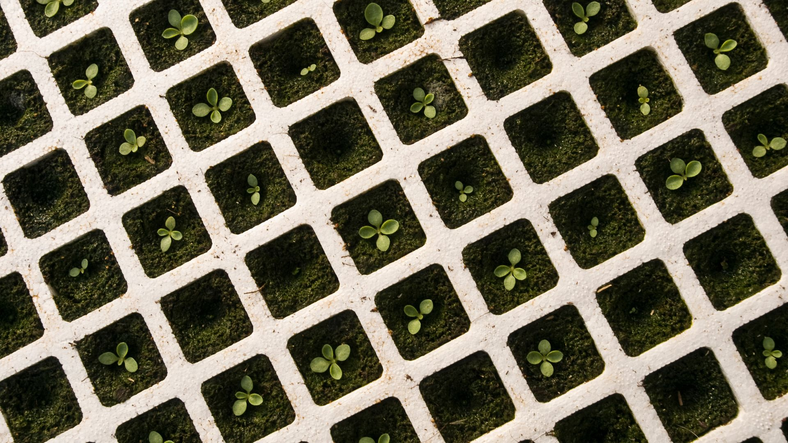
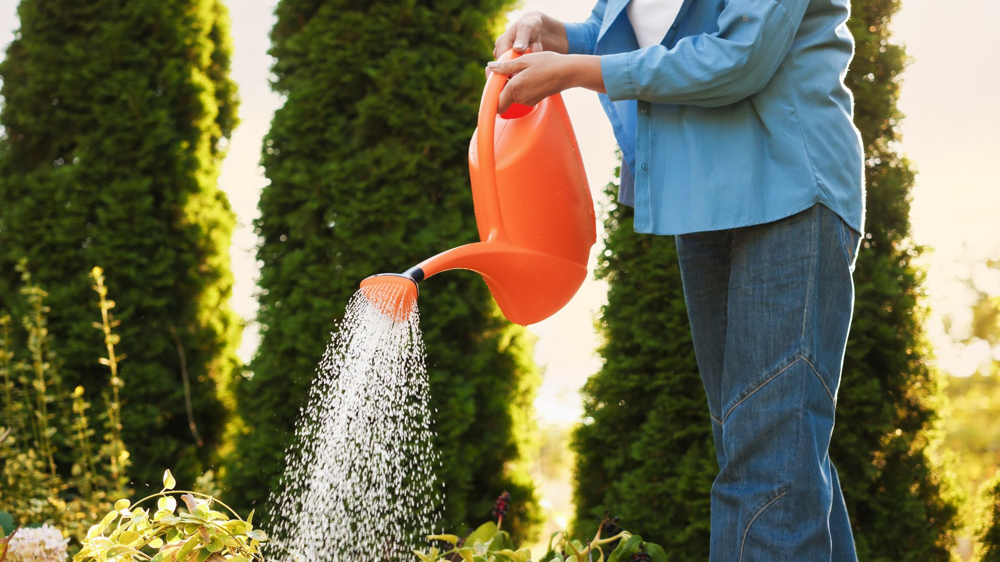
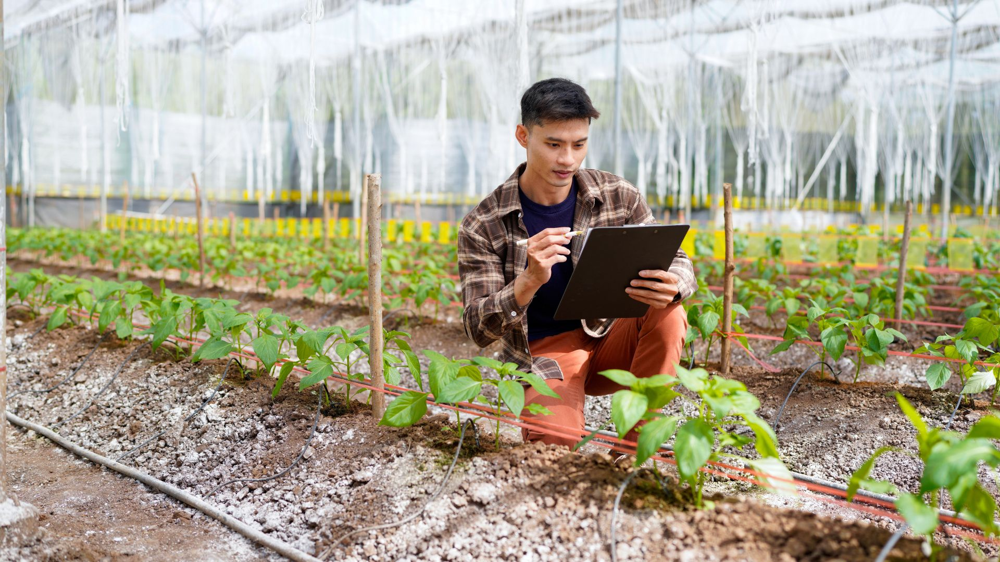

Próximo taller
Taller de trasplante
Aprende cuándo, cómo y por qué trasplantar una planta para que el cambio de maceta no sea solo estético, sino también saludable.
Evento presencial · Garden
Una sesión práctica para aprender a cambiar una planta de maceta con criterio: sustrato, drenaje, raíces, riego y pequeños gestos que ayudan a que la planta siga creciendo mejor.
Aprende cuándo, cómo y por qué trasplantar una planta para que el cambio de maceta no sea solo estético, sino también saludable.
Trasplantar una planta parece sencillo, pero elegir bien el momento, la maceta, el sustrato y el riego posterior puede marcar la diferencia. En este taller veremos el proceso paso a paso, con explicaciones claras y consejos prácticos para aplicar después en casa.
La actividad está pensada para aprender mirando, preguntando y entendiendo qué necesita cada planta antes de cambiarla de recipiente.
Una sesión práctica, cercana y pensada para resolver dudas reales.
Verás el proceso completo de trasplante, desde la elección de maceta hasta el primer riego.
Hablaremos de drenaje, mezclas, textura del sustrato y errores comunes.
Podrás preguntar dudas concretas y entender mejor qué necesita cada tipo de planta.
Aprenderás pequeños gestos para que la planta se adapte mejor después del cambio.
Cambiar una planta de maceta no es solo moverla a un recipiente más bonito. Es mirar raíces, entender crecimiento, revisar humedad y darle espacio para continuar.
Por eso este taller no busca correr: busca enseñar a mirar mejor.
Consultar próximo tallerMateriales, plantas, manos y rincones que forman parte de la experiencia presencial.




No hace falta traer nada especial, pero estos detalles pueden ayudarte a aprovechar mejor la sesión.
Puedes venir con preguntas sobre tus plantas, macetas o problemas habituales de riego.
Si tienes una planta en casa que te preocupa, fíjate en hojas, sustrato, luz y frecuencia de riego.
El taller está pensado para aprender sin prisa, preguntar y disfrutar del entorno del Garden.
Actividad presencial
Escríbenos o ven a vernos para consultar próximas fechas, plazas o actividades relacionadas.
Sitio informativo. Sin venta online.